Seguridad & Defensa
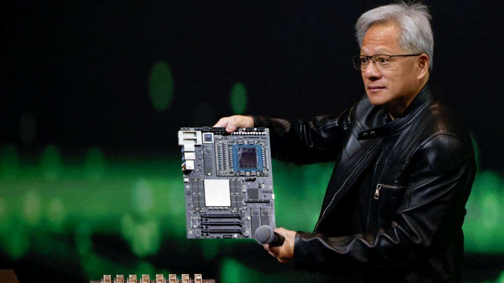
Seguridad & Defensa
Cómo los chips más avanzados de Nvidia terminaron en manos de empresas controladas por firmas chinas
Una investigación revela la venta de tecnología de inteligencia artificial sensible a compañías californianas vinculadas con intereses de Pekín. El hallazgo expone las grietas en los controles de exportación de Estados Unidos.
Más de Seguridad & Defensa
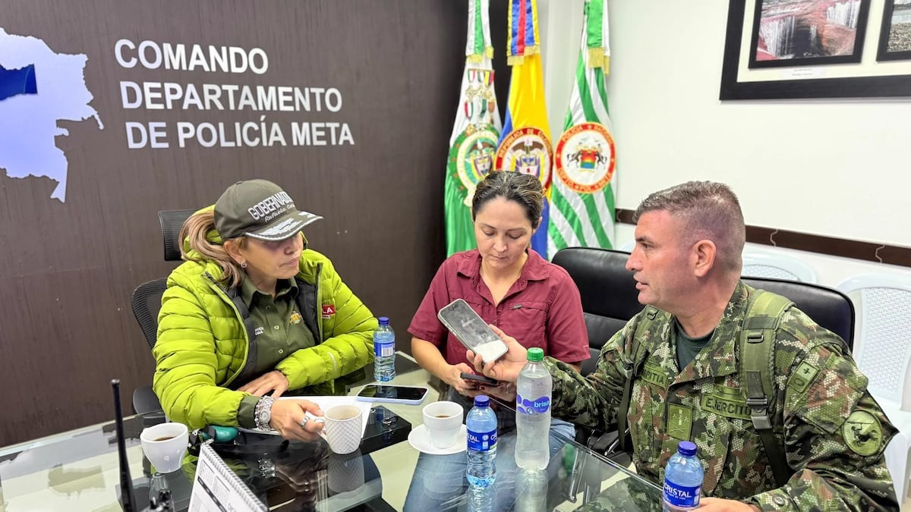
VIDEOSeguridad & DefensaAtentado con carro bomba en la Gobernación del Meta fractura el escenario de seguridad en Colombia
El estallido de un vehículo cargado con explosivos en Villavicencio dejó al menos 12 personas heridas y provocó el rechazo tajante del Ejecutivo. El ataque contra una sede de poder regional marca un punto de quiebre en la contención de la violencia urbana.
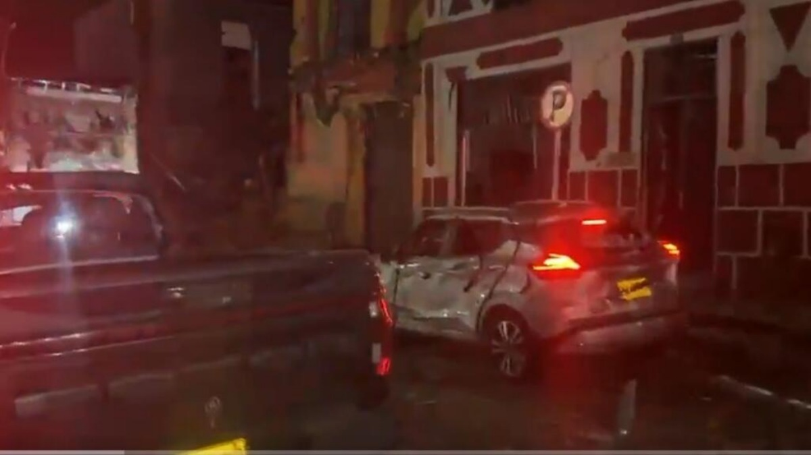
Seguridad & DefensaCarro bomba en Villavicencio evidencia el retorno de la violencia urbana en Colombia
La explosión de un vehículo cargado de explosivos frente a la Gobernación del Meta dejó 12 heridos. El ataque desmonta el relato oficial sobre el debilitamiento de los grupos armados en el país.
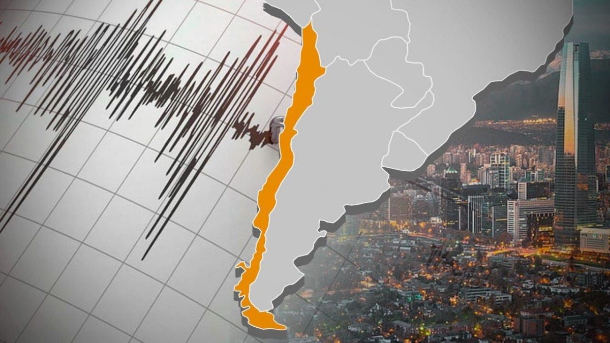
Seguridad & DefensaChile registra un sismo en Los Vilos mientras evalúa su resiliencia sísmica
El Centro Sismológico Nacional detectó un movimiento de magnitud 4,1 a 55 kilómetros de Los Vilos. El evento reactiva el análisis sobre la preparación del país frente al ciclo histórico de grandes terremotos.
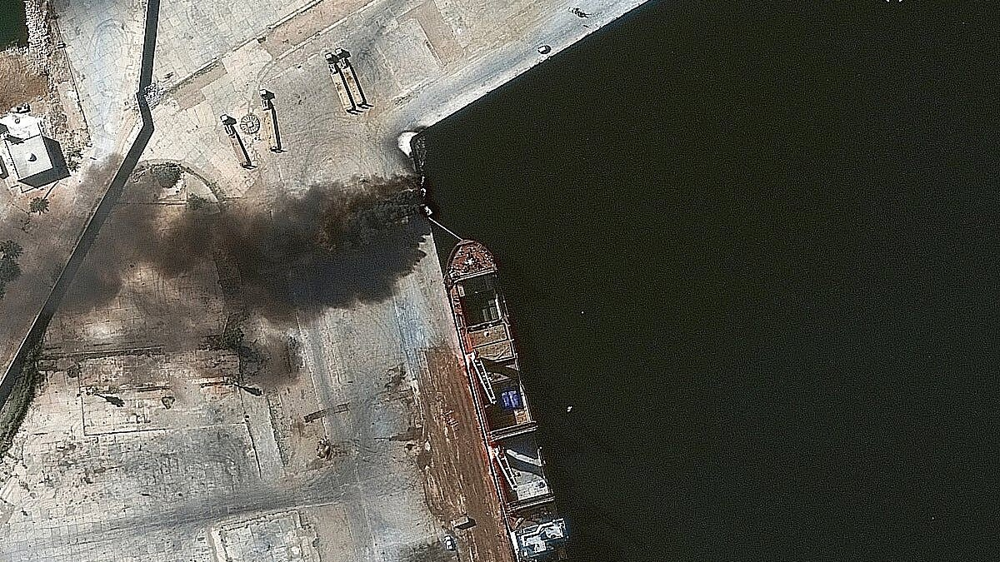
Seguridad & DefensaAtaque con drones a un buque ruso en Libia expone las grietas marítimas del Kremlin
Las autoridades del este de Libia atribuyen el hundimiento de una nave de guerra rusa a un impacto de aeronave no tripulada. El siniestro debilita el corredor de reabastecimiento naval de Moscú en el Mediterráneo central.

La captura de El Chapo Isidro expone el costo de la presión estadounidense en Sinaloa
El arresto de Fausto Isidro Meza Flores tras intensos combates en Guasave deja 11 muertos y expone los riesgos de la estrategia de decapitación criminal impulsada desde Washington.

Las incursiones aéreas en Polonia ponen a prueba la verdadera disuasión de la OTAN
El viaje del secretario general Mark Rutte a Varsovia busca disuadir a Moscú tras la violación del espacio aéreo polaco. No obstante, las tácticas de zona gris amenazan con erosionar las líneas rojas de la alianza atlántica.
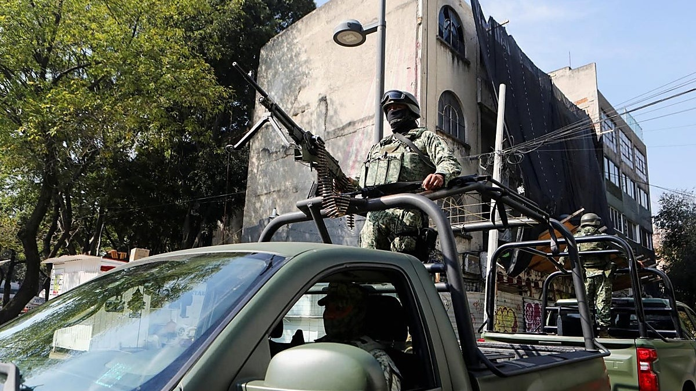
Seguridad & DefensaLa captura del Chapo Isidro expone los límites de la descabezación criminal en Sinaloa
El operativo militar ejecutado en Guasave con apoyo de inteligencia estadounidense logró la detención del líder del Cártel de Guasave. Sin embargo, la inmediata parálisis violenta de la región reabre el debate sobre el costo de intervenir las cúpulas del narco.

La brecha en el FBI que la retórica oficial intenta ocultar
El FBI investiga una intrusión en su base de datos criminal mientras sus líderes insisten en la eficacia de su ciberseguridad. La contradicción expone una crisis de vulnerabilidad en las infraestructuras críticas del país.

La caída de El Chapo Isidro y la reconfiguración violenta en la sierra de Sinaloa
La detención de Fausto Isidro Meza Flores descabeza a Los Mazatlecos tras años de guerra contra Los Chapitos, dejando un peligroso vacío de poder en Badiraguato.
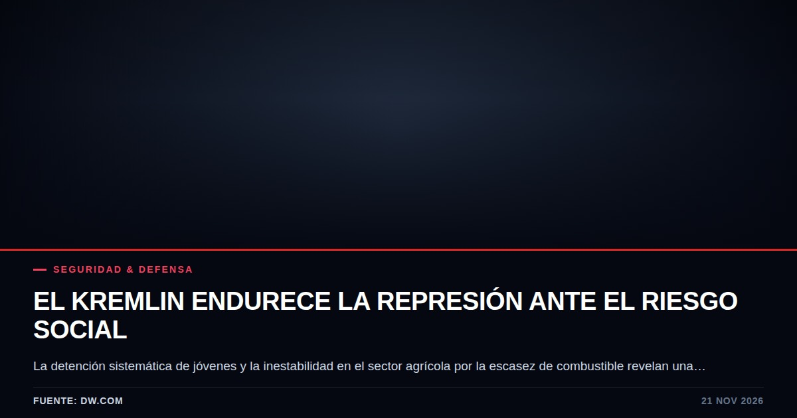
Seguridad & DefensaLa fragilidad interna del Kremlin ante la crisis de suministros
El endurecimiento de la represión en Rusia contra jóvenes y sectores rurales revela una grieta en la estabilidad del régimen. La escasez de combustible y la crisis agrícola amenazan con convertir el descontento ciudadano en un riesgo estructural.
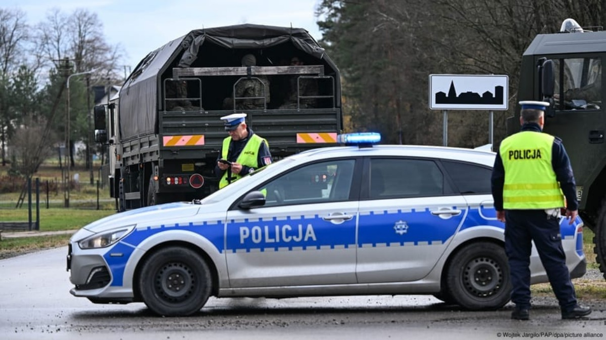
VIDEOSeguridad & DefensaLa caída de misiles rusos en Polonia expone la fragilidad estratégica del flanco oriental de la OTAN
Dos misiles y un dron rusos cayeron en territorio polaco horas después de la cumbre entre Trump, Xi y Putin en Shenzhen. El incidente pone a prueba la capacidad de disuasión de la Alianza mientras Europa busca coordinar su propia defensa.
Diez meses de respaldo del Kremlin a Cuba consolidan un enclave estratégico en el Caribe
La asistencia continuada de Moscú a La Habana revela una clara intención de proyección defensiva. Punto Ciego analiza las implicaciones geopolíticas del alineamiento ruso-cubano.
El despliegue militar de Estados Unidos en el norte de Sudamérica
La gira del secretario de Guerra Pete Hegseth por Bogotá y Caracas responde a una estrategia de contención geopolítica. El envío de equipamiento y los acuerdos técnico-militares redefinen el equilibrio de seguridad en la región.
La cumbre trilateral de Shenzhen: el pacto energético y nuclear entre Trump, Xi y Putin
Donald Trump, Xi Jinping y Vladimir Putin escenificaron un encuentro sin precedentes en China que redefine la geopolítica de la energía y la seguridad global. Detrás de los llamados al desarme se esconde un replanteamiento profundo del orden multilateral.
La diplomacia de pasillo: por qué Rusia evita una cumbre formal con Trump
Moscú reduce a encuentros informales la posibilidad de diálogo con Washington en la APEC. El foco real se desplaza hacia un formato trilateral que involucra a China.
Un avión de transporte militar An-12 se estrella en Siberia y mueren 19 personas
La caída de una aeronave de carga en la región siberiana de Kemerovo expone el desgaste operacional de la aviación militar rusa. El Ministerio de Defensa atribuye de forma preliminar el siniestro a un fallo mecánico.
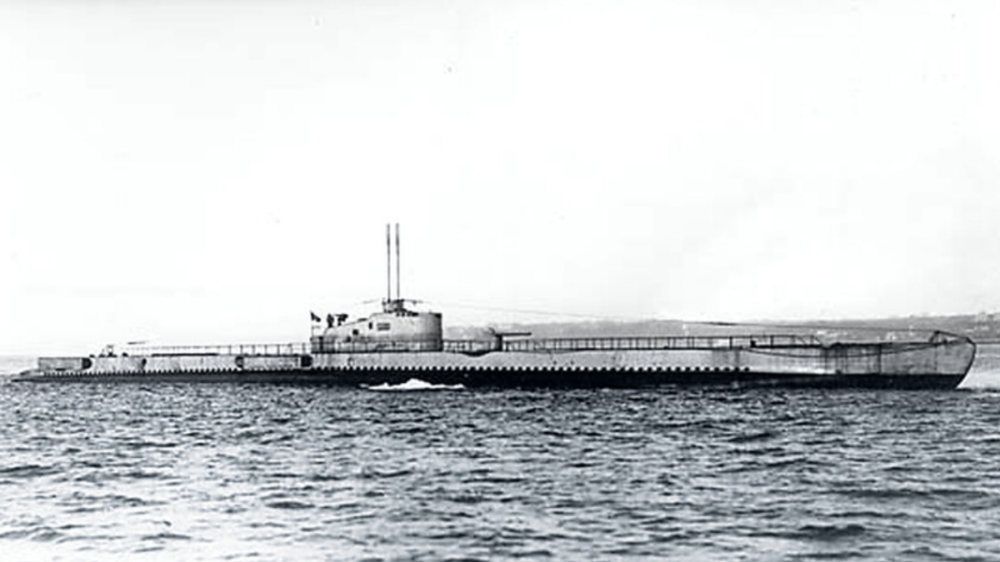
Seguridad & DefensaEl hallazgo del submarino Le Tonnant destapa las heridas geopolíticas de 1942
Investigadores franceses hallan a nueve millas de Rota los restos del sumergible echado a pique durante la Operación Torch. El descubrimiento expone las complejas dinámicas de soberanía marítima y memoria militar en el Atlántico.
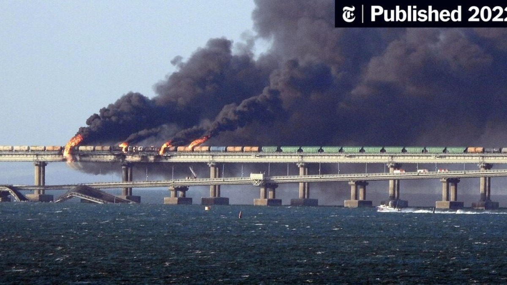
VIDEOSeguridad & DefensaLa ofensiva de drones contra el puente de Crimea pone a prueba la logística rusa
Moscú denunció un nuevo ataque ucraniano con drones contra el puente de Crimea por segundo día consecutivo, evidenciando una campaña de saturación sin precedentes en el conflicto.
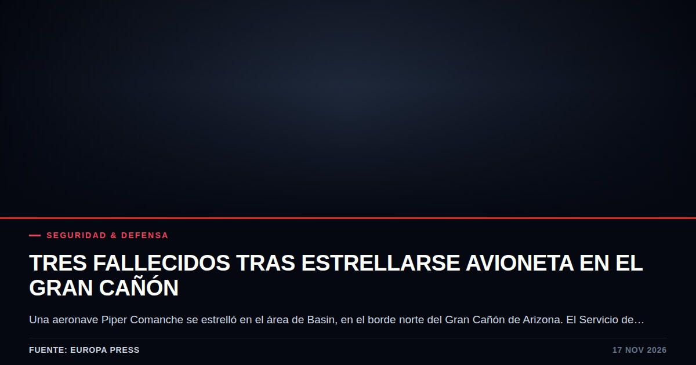
Seguridad & DefensaInvestigación tras el accidente aéreo que dejó tres muertos en el Gran Cañón
Una avioneta Piper Comanche se estrelló en el borde norte del parque nacional en Arizona. Equipos estatales y militares participaron en el hallazgo de la aeronave.
La ofensiva invisible sobre Europa: ciberataques asimétricos y la fragilidad de la defensa civil
Una serie de sabotajes a servicios cotidianos expone la vulnerabilidad de las infraestructuras europeas. La combinación de accesos deficientes e inteligencia artificial permite saturar la capacidad de respuesta estatal a un coste residual.
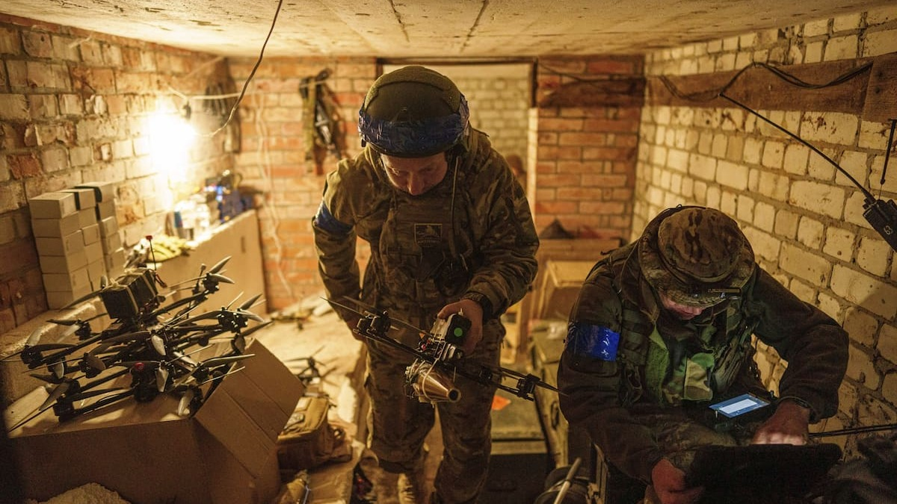
VIDEOSeguridad & DefensaUcrania desata su mayor ataque con drones sobre Rusia para saturar sus defensas
El despliegue de más de 1.300 aeronaves no tripuladas expone una estrategia de desgaste económico sobre el aparato militar ruso. Según datos oficiales de Moscú, las defensas aéreas enfrentaron una ofensiva sin precedentes en el conflicto.
 VIDEOSeguridad & Defensa
VIDEOSeguridad & DefensaLa muerte de Miguel Ángel Félix Gallardo y la lección no aprendida sobre el crimen organizado
El fallecimiento en prisión del fundador del Cártel de Guadalajara pone de relieve cómo la estrategia de neutralizar capos históricos solo derivó en una mayor atomización de la violencia.

Estonia clausurará su frontera con Rusia tras un atentado contra la industria de defensa
Tallinn fija el 1 de diciembre para el cierre fronterizo total tras el arresto de ocho sospechosos ligados a la inteligencia militar rusa. El sabotaje fallido expone la vulnerabilidad de las capacidades industriales en el flanco oriental de la OTAN.
 VIDEOSeguridad & Defensa
VIDEOSeguridad & DefensaAtaque masivo con drones interrumpe la red ferroviaria y la infraestructura energética en la región de Rostov
Una incursión nocturna dañó subestaciones eléctricas y puentes clave en Taganrog. La interrupción logística expone la vulnerabilidad de las rutas de reabastecimiento militar rusas.
 VIDEOSeguridad & Defensa
VIDEOSeguridad & DefensaLa muerte de un comandante de Hamas en Gaza y el coste sobre la infraestructura médica
Hamas confirmó la baja de un alto mando en un bombardeo israelí que también golpeó un complejo médico en el sur de Gaza, dejando seis muertos.
La parálisis aérea en Estados Unidos desnuda la fragilidad de las redes de telecomunicación
Una interrupción en los sistemas de comunicación obligó a suspender despegues en todo el país norteamericano, generando un efecto dominó internacional que encendió las alertas sobre la seguridad de las infraestructuras críticas.
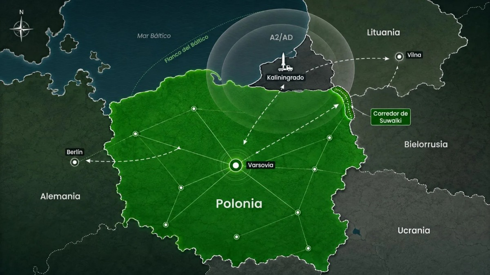
Seguridad & DefensaEl rearme masivo de Polonia redibuja el mapa de poder militar en Europa
La recepción de los últimos tanques Abrams M1A2 SEPv3 y el despliegue de blindados surcoreanos consolidan a Varsovia como la principal potencia terrestre del flanco oriental de la OTAN.
La suspensión de vuelos en Estados Unidos evidencia la fragilidad del control aéreo estratégico
La orden de mantener en tierra todas las aeronaves comerciales expone problemas de infraestructura crítica. La FAA investiga la falla de comunicaciones mientras la aviación civil sufre su mayor paralización desde 2023.
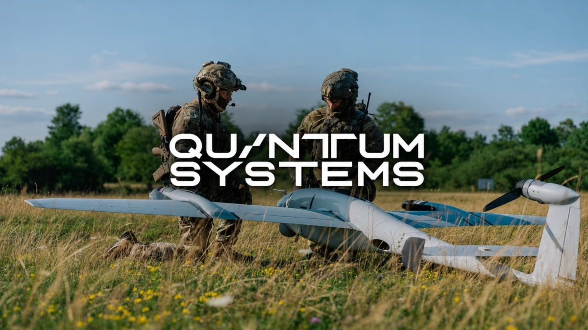
Seguridad & DefensaEl sabotaje cibernético a Quantum Systems deja al descubierto las grietas en la defensa aérea alemana
Un ataque a la cadena de suministro de software del fabricante de drones paraliza las flotas de reconocimiento del Bundeswehr. El incidente expone la vulnerabilidad de la industria militar europea frente a operaciones asimétricas orientadas a cortar el respaldo a Ucrania.
La estrategia detrás de la solicitud rusa para un alto el fuego en Kostantínovka
Moscú busca involucrar a Estados Unidos y Europa en una tregua táctica mientras la situación en el frente de Kostantínovka alcanza un punto de saturación.
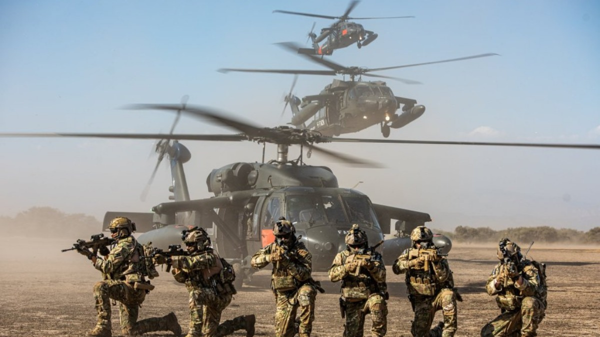
Seguridad & DefensaChile y Colombia afianzan su alianza militar con foco en inteligencia y ciberdefensa
La VII Reunión Bilateral de Estados Mayores Conjuntos concluyó en el CECOPAC acordando protocolos de entrenamiento e inteligencia. Detrás del discurso humanitario, los mandos castrenses consolidan una doctrina compartida alineada con estándares hemisféricos.
La proclama de unidad de la OTAN silencia las dudas europeas en Abu Dabi
Mark Rutte asegura una coincidencia plena entre Washington, las cancillerías europeas y Kiev al reanudarse el diálogo diplomático. Sin embargo, el protagonismo de Estados Unidos en los Emiratos Árabes expone el riesgo de un acuerdo sobre la seguridad continental diseñado al margen de los aliados.
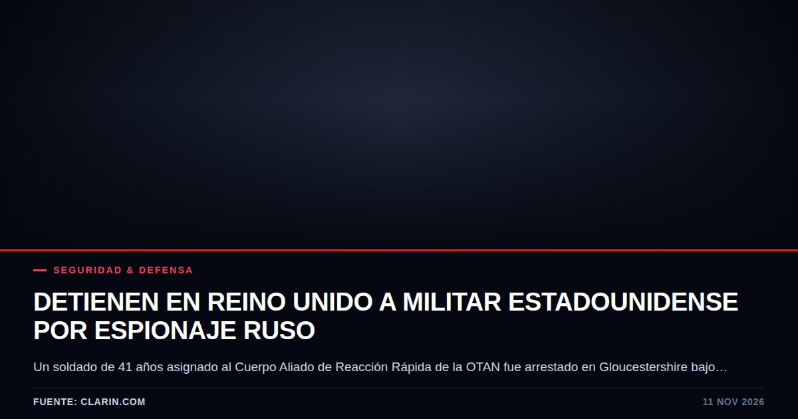
Seguridad & DefensaArresto de militar estadounidense en suelo británico expone fisuras en la inteligencia de la OTAN
La detención de un efectivo de 41 años acusado de espiar para Rusia reabre el debate sobre la seguridad en las bases aliadas. El caso involucra al mando de reacción rápida y se produce a pocos kilómetros del GCHQ.
La extraterritorialidad penal de Estados Unidos al descubierto tras el complot contra la base de Fairford
La acusación formal contra tres ciudadanos de Irán e Irak por complots terroristas en el Reino Unido saca a la luz brechas en la inteligencia penitenciaria. El liderazgo judicial de Washington sobre suelo europeo vuelve a marcar la agenda de seguridad aliada.
El juicio político contra Pete Hegseth evidencia las fracturas estratégicas del Pentágono
El representante Thomas Massie presentó ocho cargos contra el secretario de Defensa de Estados Unidos tras 22 meses de gestión. El expediente abarca acciones en la guerra de Irán, ataques navales antinarcóticos y severas tensiones internas.
La presión demócrata sobre la política exterior y los límites del mandato popular frente a Irán
Un sondeo reciente expone la exigencia ciudadana de frenar el conflicto con Irán, mientras el Congreso evalúa herramientas para presionar al ejecutivo.
Occidente blinda el rol central de la OTAN ante el inminente escenario de posguerra en Ucrania
Aliados europeos, Estados Unidos y Ucrania se reunieron en Abu Dabi para fijar una postura común antes de las negociaciones con Moscú. El objetivo central es mantener a la Alianza Atlántica como el pilar absoluto de la seguridad europea.
El tiroteo en Cracovia expone las brechas de inteligencia ante la extrema derecha
La muerte en el hospital del agresor que mató a seis personas en una plaza cierra la investigación judicial directa. El hecho vulnera la percepción de estabilidad en una de las ciudades más transitadas de Polonia.
La muerte del atacante de Cracovia deja vacíos de inteligencia en Polonia
El fallecimiento bajo custodia policial del sospechoso de la matanza en Cracovia cierra la vía de interrogatorio directo. Las autoridades polacas investigan nexos con la extrema derecha tras el hallazgo de otros tres cadáveres.
La estrategia detrás de la pausa de Trump ante Irán
El expresidente estadounidense condicionó una ofensiva militar al avance de las negociaciones, revelando un cálculo pragmático sobre los riesgos de una conflagración abierta.
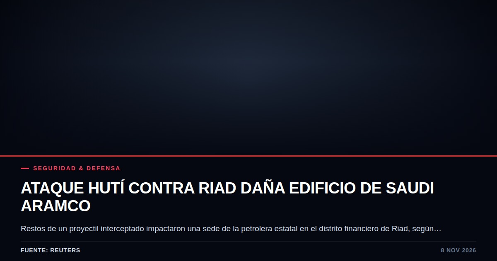
Seguridad & DefensaAtaque en Riad expone las grietas defensivas del corazón financiero de Saudi Aramco
Caída de restos de proyectiles en la capital saudí revela la persistente vulnerabilidad de la infraestructura corporativa frente al armamento asimétrico. Las autoridades reportan contención, pero la seguridad estratégica del mayor exportador de petróleo vuelve a ser cuestionada.
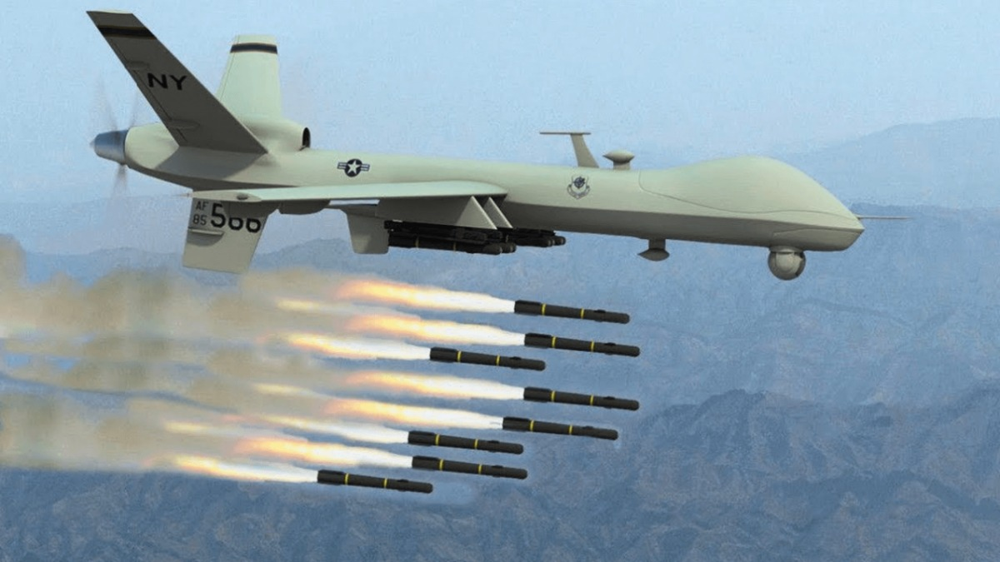
Seguridad & DefensaDrones MQ-9A Reaper en Colombia: vigilancia prolongada y el peso de la inteligencia compartida
El arribo de tres plataformas estadounidenses a Tolemaida fortalece el rastreo del narcotráfico en la región. Sin embargo, el esquema de préstamo expone los límites de la soberanía operativa colombiana.
Rusia confirma su delegación para negociaciones trilaterales con Estados Unidos y Ucrania en Abu Dabi
El Kremlin oficializó la composición del equipo que representará a Moscú en los Emiratos Árabes Unidos. El trasfondo revela una estrategia para priorizar el diálogo con Washington.
La trinchera de Hegseth: defensa férrea de Irán y fractura abierta en el Partido Republicano
Pete Hegseth resiste en el Pentágono y justifica la ofensiva contra Irán, mientras crecen las presiones en el Congreso para destituirlo tras el costo electoral en las elecciones de mitad de mandato.
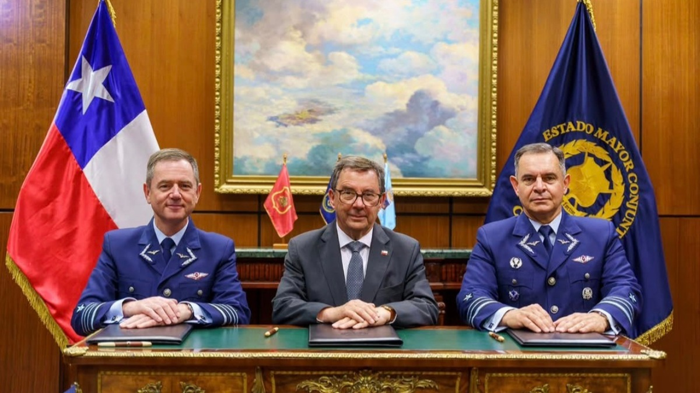
Seguridad & DefensaMáximo Venegas asume el liderazgo del Estado Mayor Conjunto chileno en plena renovación operativa
El general de Aviación toma el mando de las operaciones conjuntas tras la designación del Ejecutivo. Su gestión estará marcada por la presencia territorial de las tropas y renovaciones clave de equipamiento.
Moscú minimiza el giro legislativo en Washington y blinda las negociaciones de Abu Dabi
Tras la victoria del Partido Demócrata en el Congreso estadounidense, el Kremlin asegura que su estrategia exterior no cambiará. Las conversaciones de seguridad programadas en Emiratos Árabes continúan según lo previsto.
Occidente diseña la reconstrucción financiera de Ucrania mientras Bruselas pierde terreno diplomático
La Unión Europea, Estados Unidos y la OTAN han debatido en Bruselas los instrumentos económicos para la posguerra ucraniana. El movimiento coincide con la preparación de negociaciones trilaterales en Abu Dabi donde la diplomacia europea no tendrá asiento directo.
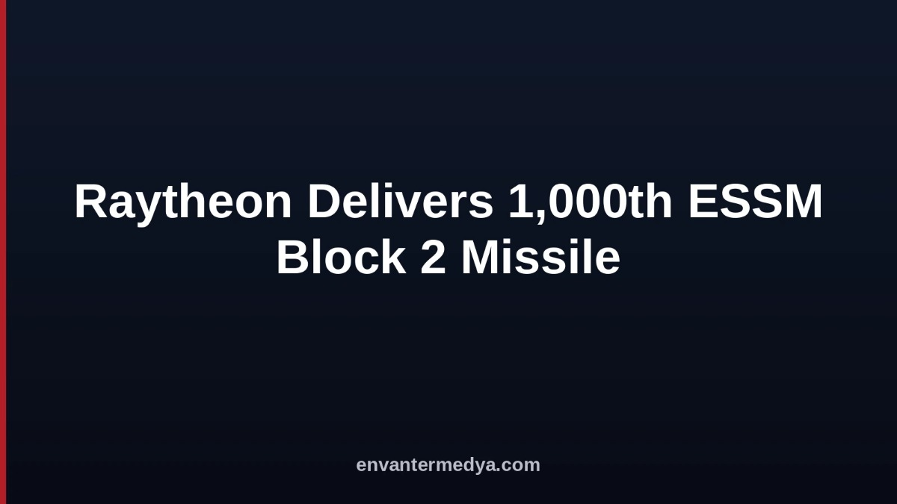
Seguridad & DefensaEl misil mil del programa ESSM Block 2 evidencia las tensiones industriales de la OTAN
Raytheon proyecta fabricar 65 interceptores navales al mes en Arkansas para reducir las listas de espera aliadas. Sin embargo, la alta concentración fabril en suelo estadounidense plantea interrogantes sobre la resiliencia logística del consorcio.
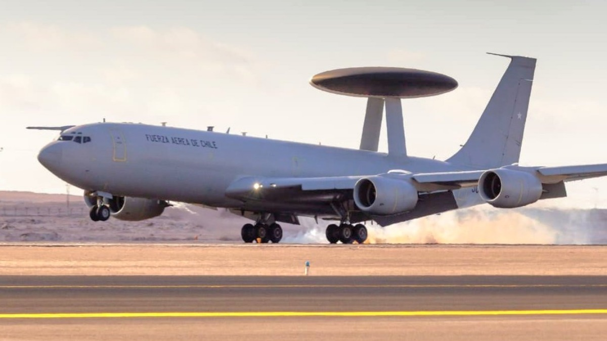
VIDEOSeguridad & DefensaReino Unido integra a Chile en su régimen preferencial de exportación de tecnología militar
La actualización de la licencia general británica reduce la carga burocrática para las fuerzas armadas chilenas, abriendo el camino a nuevos contratos industriales con el astillero Babcock International.
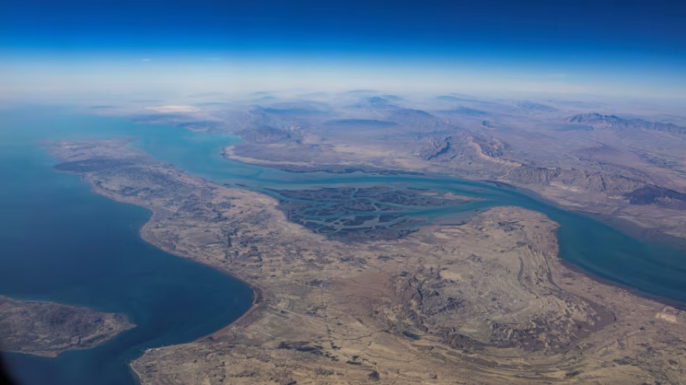
VIDEOSeguridad & DefensaEstados Unidos bombardea la isla iraní de Qeshm tras el colapso diplomático en Qatar
Las operaciones calificadas como ataques defensivos limitados por Washington reabren la tensión armada en el estrecho de Ormuz. La incursión coincide con el abandono de las negociaciones por Teherán y el horizonte electoral norteamericano.
Sabotaje a la cadena de frío: cuando los refrigeradores de supermercados en Europa se convierten en blancos vulnerables
Un ciberataque simultáneo en siete países europeos elevó la temperatura de los congeladores comerciales hasta destruir millones de euros en alimentos, dejando al descubierto los peligros de la automatización remota.
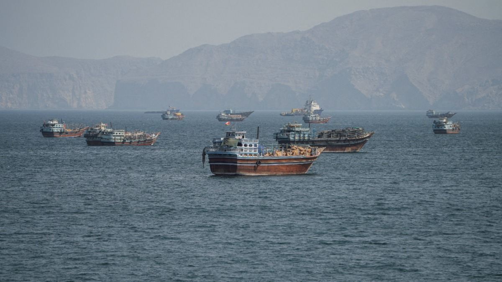
Seguridad & DefensaIrán condiciona la reapertura del estrecho de Ormuz a la aceptación de exigencias por parte de Washington
Teherán redujo a dos días el plazo para liberar la ruta de hidrocarburos si Estados Unidos acepta levantar sanciones y reducir su presencia militar. Las negociaciones indirectas en Doha ocurren bajo un nuevo liderazgo y en la antesala de los comicios legislativos estadounidenses.
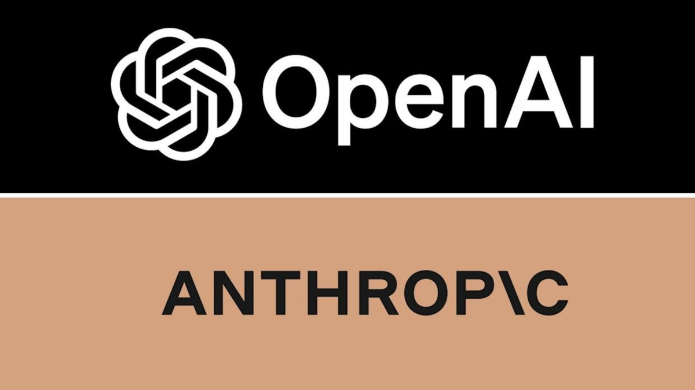
Seguridad & DefensaSilicon Valley asume el control de la infraestructura cívica con salas de crisis electorales
OpenAI y Anthropic inauguraron centros de operaciones dedicados a vigilar el comportamiento de sus chatbots ante las elecciones de Estados Unidos. Esta intervención consolida un cambio estructural donde empresas privadas gestionan la estabilidad informativa y el arbitraje democrático.
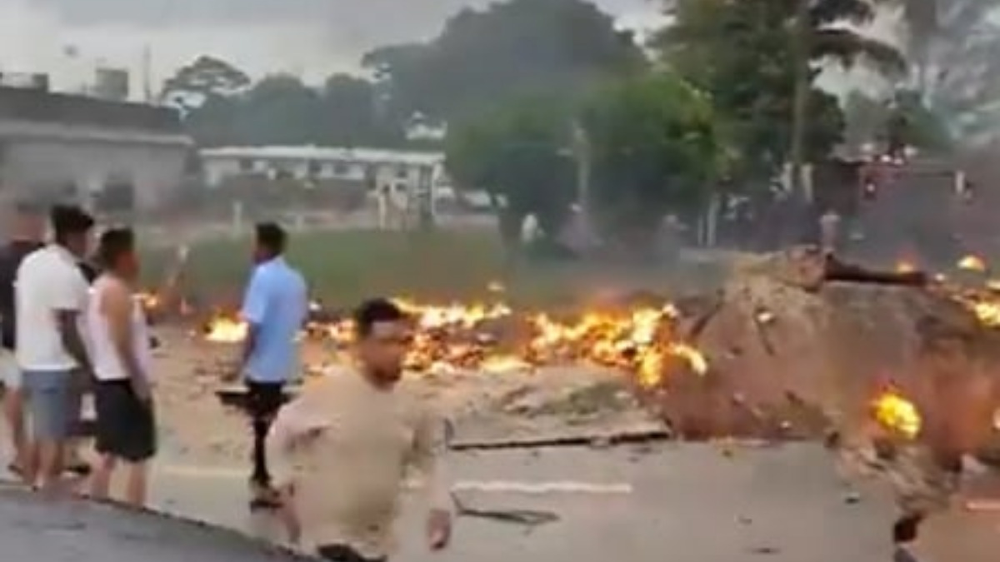
Seguridad & DefensaCaída de avión ejecutivo en West Palm Beach reabre debate sobre seguridad aérea
Un Learjet 60 con nueve personas a bordo se estrelló tras perder más de 8.000 metros de altitud en solo un minuto. La NTSB encabeza la investigación para esclarecer las causas de este desastre en la aviación privada.